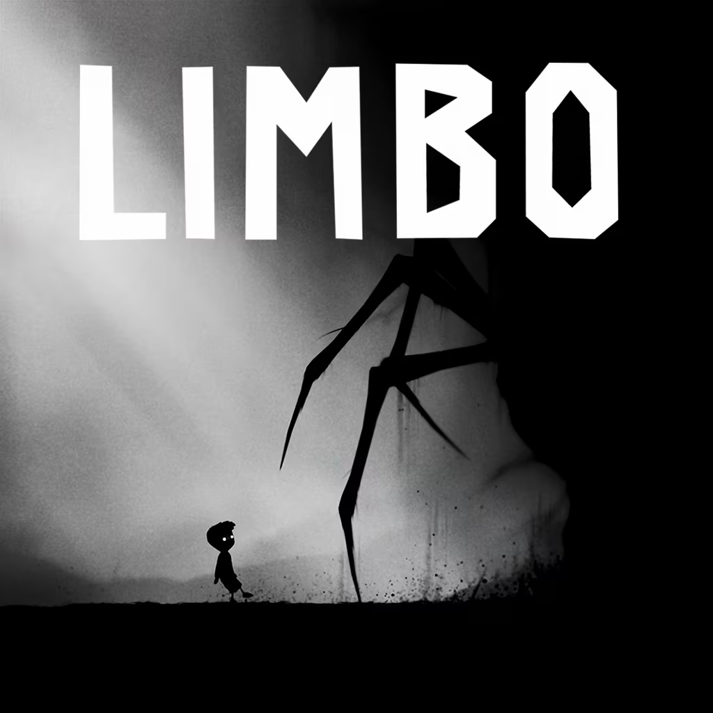

| Informações |
Esse site é um projeto realizado por Murilo Amauri Paludetto durante um curso de
Desenvolvimento de Sistema do Senai Lençóis Paulista em 2024.
O tema Jogos é algo que tenho muito interesse, seja pela programação por trás ou pelo desing.
Passo um bom tempo pesquisando sobre e buscando entender sobre como foi feito, principalmente
em jogos indie’s. Além de gostar de passar tempo jogando.
No desenvolvimento desse site, usei como inspiração alguns outros, tendo como principal
Stardew Valley Wiki,
um site muito intuitivo, tenho muito costume de buscar informação por lá.
